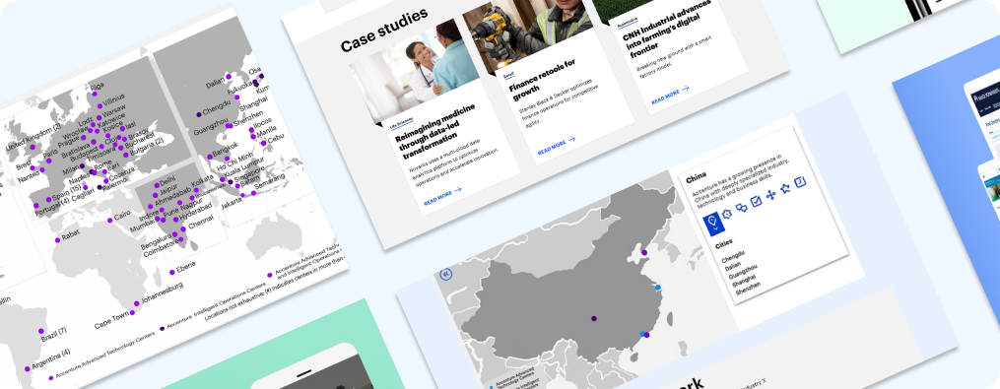
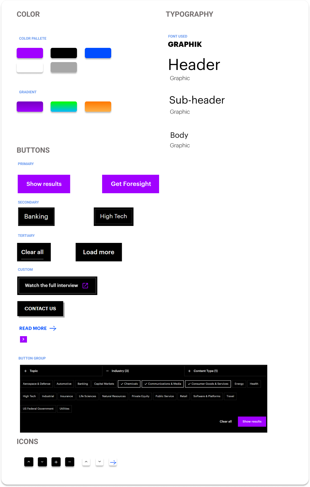
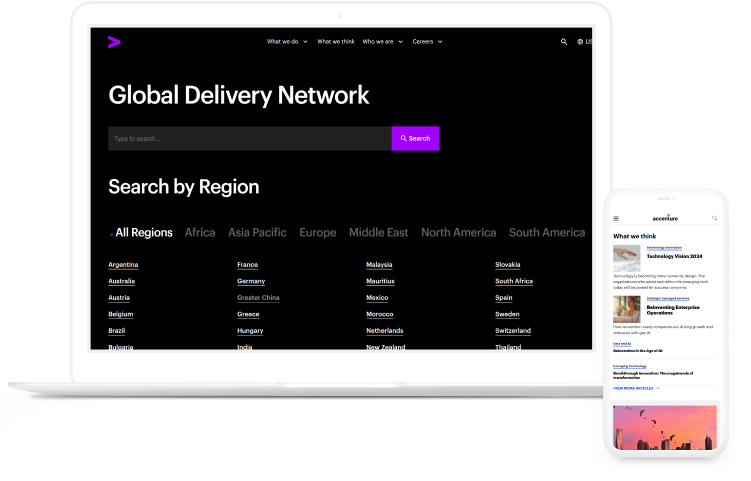
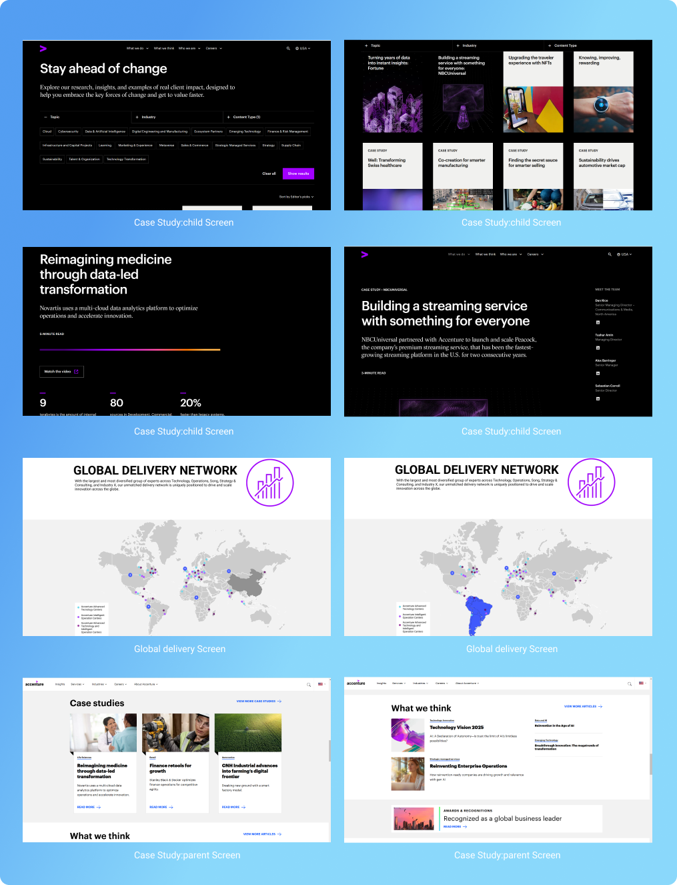
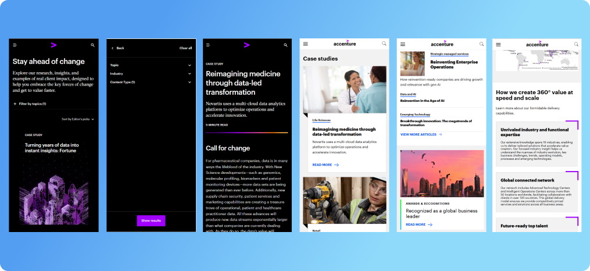

Challenge
The data center project grappled with the formidable task of showcasing all global locations within a singular, interactive, and accessible frame. Furthermore, it necessitated avant-garde designs for the research showcase page, employing a light theme for the homepage and a dark theme for the subsidiary pages, all while maintaining aesthetic consistency and functionality.
Solution
Integrate an interactive global map to showcase all data center locations, and design a cohesive research showcase page with a light theme for the homepage and a dark theme for subsidiary pages. Ensure aesthetic consistency, functionality, and accessibility across the site, as per the design and branding standards.
Design System
The design system for the Data Center Project emphasizes an intuitive, interactive interface with a sophisticated color palette, seamless navigation, and user-centric elements to ensure a cohesive and engaging experience. The design incorporates real-time data visualization and responsive design to cater to users on all devices. Additionally, adaptive themes and accessible features make the interface appealing and functional for all users.
Responsive Design Approach
This website is designed and developed with a fully responsive approach, ensuring optimal performance and user experience across all devices, including desktop, laptop, iPad, and mobile devices. It seamlessly adapts to various screen sizes and orientations, providing consistent accessibility and functionality.
Prototype
This section showcases the prototypes used for the project, illustrating the design concepts and functionality. Explore the examples to see our responsive approach in action.
 Result
The data center project has delivered impressive results, showcasing a design that is both aesthetically pleasing and accessible. The interactive elements have greatly enhanced user engagement, leading to notable improvements in user and client satisfaction, and have also attracted new business opportunities.